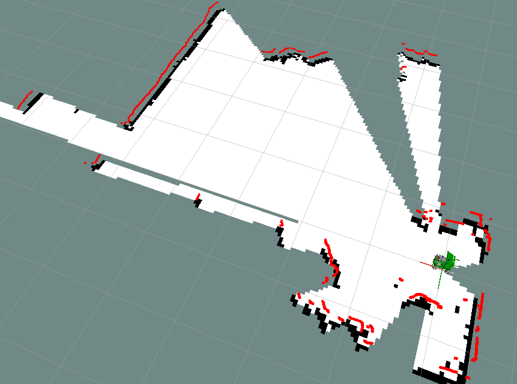
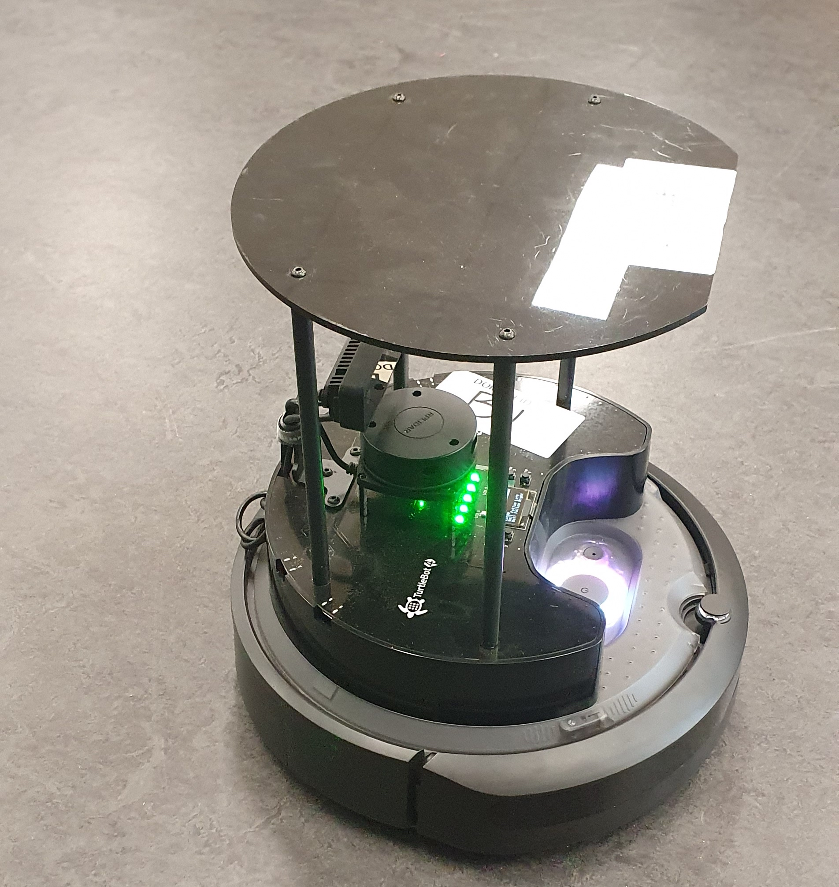

GMapping is an open-source laser-based SLAM (Simultaneous Localisation and Mapping) algorithm that utilizes a Rao-Blackwellized Particle Filter to create 2D occupancy grid maps. By combining LiDAR data with wheel odometry, it allows a mobile robot to track its pose and map unknown environments in real-time.

The implementation was performed on a TurtleBot 4 platform running ROS 2, utilizing the slam_gmapping node. The process involved subscribing to high-frequency LiDAR scans and odometry data to generate a real-time occupancy grid of the testing environment.

Fig 1.0 — TurtleBot4 Used in Lab